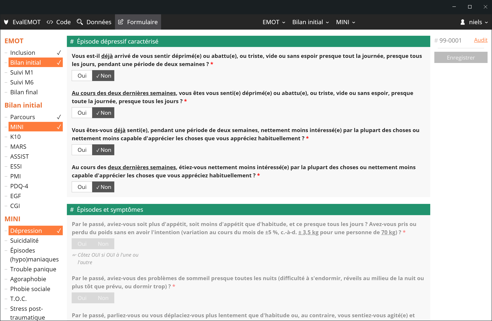
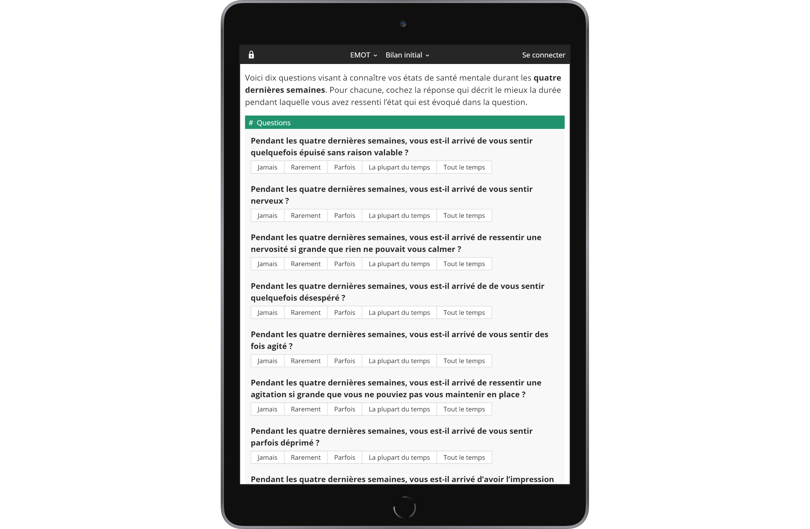
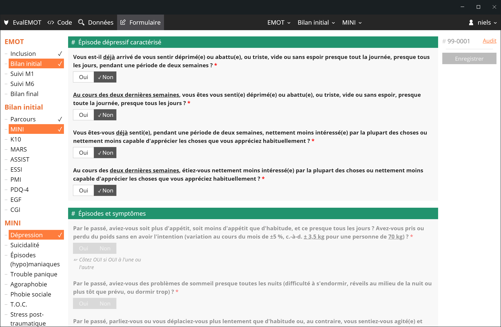
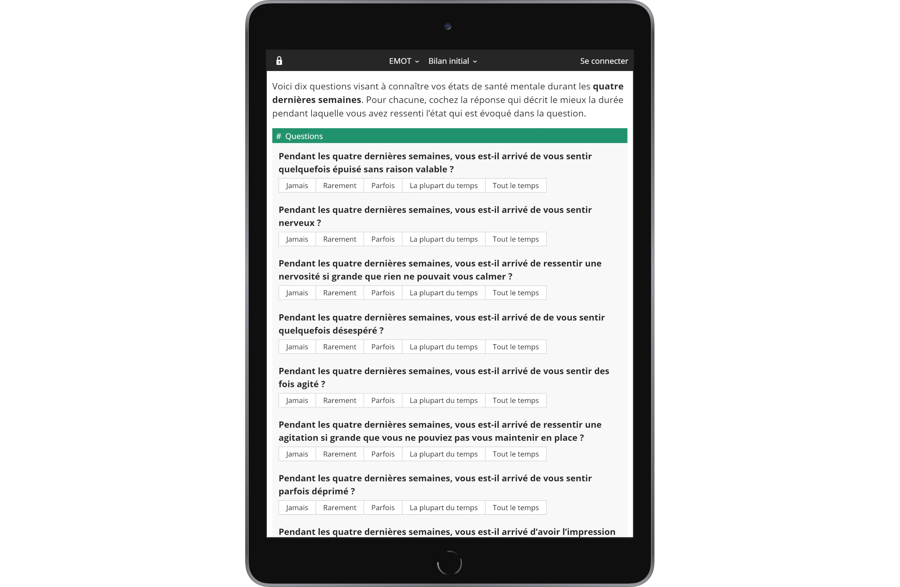

Goupile est un outil de conception d'eCRF libre et gratuit qui s'efforce de rendre la création de formulaires et la saisie de données à la fois puissantes et faciles.
Contactez-nous via hello@goupile.fr pour utiliser cet outil qui est disponible en version beta.
Nous proposons également des prestations d'hébergement payantes basées sur Goupile adaptées à vos besoins, consultez la page des tarifs ou contactez-nous pour plus d'information.
Le code source est publié sous licence AGPL version 3.
Créez et testez vos formulaires à la volée avec toutes sortes de widgets
Entrez vos données et exportez les simplement, depuis le même écran
Partagez vos formululaires avec vos collaborateurs pour saisir les données
Faites passer vos évaluations sur tablette ou mobile, en ligne ou hors ligne
Gérez vos projets et vos utilisateurs à l'aide du module d'administration
● ○ ○ ○ ○
 


